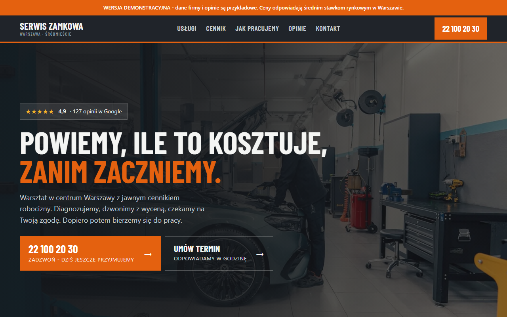

01
Usługi
Kierowca od razu widzi, czym się zajmujesz i z jakim problemem może przyjechać.
STRONY DLA WARSZTATÓW
Tworzymy strony dla warsztatów samochodowych. Porządkujemy zakres usług, lokalizację, godziny i kontakt tak, żeby kierowca nie musiał szukać informacji po mapach i social mediach.
Zobacz bezpłatny podgląd →01
Kierowca od razu widzi, czym się zajmujesz i z jakim problemem może przyjechać.
02
Adres, mapa i informacje organizacyjne są pod ręką na telefonie.
03
Formularz lub system rezerwacji prowadzi do ustalenia wizyty bez zbędnych kroków.
CO MOŻE ZAWIERAĆ STRONA
PRZYKŁADOWY PROJEKT
Projekt demonstracyjny z przykładowymi danymi. Twój podgląd przygotujemy na Twoich treściach i zdjęciach.

WARSZTAT SAMOCHODOWYTelefon, zakres usług i umówienie terminu są na pierwszym planie.
Otwórz pełne demo w nowej karcie